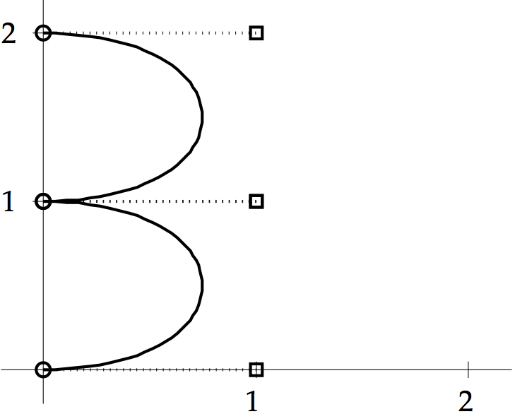

EXERCISES 3.5
\(\def\ds{\displaystyle} \)
1 (a) Using the Bezier curve equations, one calculates
\[b_x=3(0)=0, c_x=3(2-0)-0=6, d_x=1-0-0-6=-5, \] \[b_y=3(2-0)=6, c_y=3(0-2)-6
=-12, d_y=0-0-6+12=6.\] The Bezier curve is
\[
\left\{ \begin{array}{l}
x(t) = x_0+b_xt+c_xt^2+d_xt^3 = 6t^2-5t^3\\
y(t) = y_0+b_yt+c_yt^2+d_yt^3 = 6t-12t^2+6t^3
\end{array}\right. .\]
1 (b) Similar to (a). One calculates \(b_x= -3, c_x = -3, d_x =3\) and
\(b_y= -3, c_y = 3, d_y = 0\). The Bezier curve is
\[
\left\{ \begin{array}{l}
x(t) = 1 -3t -3t^2+3t^3\\
y(t) = 1-3t+3t^2
\end{array}\right. .\]
1 (c) Similar to (a). One calculates \(b_x=0, c_x=3, d_x=-2\) and
\(b_y=3, c_y=-3, d_y=0\). The Bezier curve is
\[
\left\{ \begin{array}{l}
x(t) = 1+3t^2-2t^3\\
y(t) = 2+3t-3t^2
\end{array}\right. .\]
3 We use Example 3.16 to draw three line segments as a three-piece
Bezier curve. Each piece is characterized by four two-dimensional points:
\begin{align*}
(1,2)\ \ \ \ \ (1,2)\ \ \ \ \ (3,4)\ \ \ \ \ (3,4)\ \ \ \ \ \\
(3,4)\ \ \ \ \ (3,4)\ \ \ \ \ (5,1)\ \ \ \ \ (5,1)\ \ \ \ \ \\
(5,1)\ \ \ \ \ (5,1)\ \ \ \ \ (1,2)\ \ \ \ \ (1,2)\ \ \ \ \
\end{align*}
Translating to Bezier curves yields
\(\ds
\left\{ \begin{array}{l}
x(t) = 1 +2t^2(3-2t)\\
y(t) = 2 +2t^2(3-2t)
\end{array}\right.\quad
\left\{ \begin{array}{l}
x(t) = 3 +2t^2(3-2t)\\
y(t) = 4 -3t^2(3-2t)
\end{array}\right.\quad
\left\{ \begin{array}{l}
x(t) = 5 -4t^2(3-2t)\\
y(t) = 1 +t^2(3-2t)
\end{array}\right. \)
5 The number 3:

7(a) The letter p:
7 (b) The letter s:
9 There are infinitely many Bezier curves satisfying the
requirements. The data points are
\((-1,0), (-1,y_1), (1,y_2), (1,0)\)
which generate the Bezier curve
\[
\left\{ \begin{array}{l}
x(t) = -1 +6t^2 -4t^3\\
y(t) = 3y_1t+(3y_2-6y_1)t^2+(3y_1-3y_2)t^3
\end{array}\right. .\]
At \(t=\frac{1}{2}, x(\frac{1}{2})=0\), so we must solve \(1=y(\frac{1}{2})
=\frac{3}{8}(y_1+y_2)\). Any combination of \(y_1\) and \(y_2=\frac{8}{3}-y_1\)
satisfies the requirements. The solutions are
\[
\left\{ \begin{array}{l}
x(t) = -1 +6t^2 -4t^3\\
y(t) = 3y_1t+(8-9y_1)t^2+(6y_1-8)t^3
\end{array}\right. \]
for arbitrary \(y_1\). A particularly symmetric Bezier curve is given
by setting \(y_1=y_2=\frac{4}{3}\), or \(y(t)=4t-4t^2\).
11 (a) For a space curve, the Bezier equations are applied
to the \(x, y\) and \(z\) coordinates. Therefore \(b_x=3, c_x= -9, d_x = 5,
b_y=0, c_y=6, d_y= -5\), and \(b_z=0, c_z=3, d_z = -3\). The Bezier
space curve is
\[
\left\{ \begin{array}{l}
x(t) = 1 +3t-9t^2 +5t^3\\
y(t) = 6t^2-5t^3\\
z(t) = 3t^2-3t^3
\end{array}\right. .\]
11 (b) Similar to (a). Calculate \(b_x=0, c_x=-6, d_x=6,
b_y=3, c_y=-9, d_y=6\), and \(b_z=3, c_z= -12, d_z = 8\). The
Bezier space curve is
\[
\left\{ \begin{array}{l}
x(t) = 1 -6t^2 +6t^3\\
y(t) = 1+3t-9t^2+6t^3\\
z(t) = 2+3t-12t^2+8t^3
\end{array}\right. .\]
9 (c) Similar to (a). Calculate \(b_x=3, c_x=-12, d_x=10,
b_y=c_y=d_y=0\), and \(b_z=0, c_z= 6, d_z = -4\). The
Bezier space curve is
\[
\left\{ \begin{array}{l}
x(t) = 2+3t -12t^2 +10t^3\\
y(t) = 1\\
z(t) = 1+6t^2-4t^3
\end{array}\right. .\]
13 Differentiating the Bezier formula \(x(t)=x_0+b_xt+c_xt^2+d_xt^3\)
gives \(x'(t)=b_x+2c_xt+3d_xt^2\). Substituting yields \(x'(0)=b_x=3(x_1-x_0)\)
and
\begin{align*}
x'(1)&= b_x+2c_x+3d_x\\
&=b_x+2c_x+3(x_3-x_0-b_x-c_x)\\
&= -3(x_1-x_0)-3(x_2-x_1)+3(x_3-x_0)\\
&= 3(x_3-x_2).
\end{align*}
Similarly, \(y'(0)=3(y_1-y_0)\) and \(y'(1)=3(y_3-y_2)\). Therefore the
direction vector of the parametric curve at \(t=0\) is \(3(x_1-x_0, y_1-y_0)\),
the direction from the first endpoint to the first control point. The
direction vector at \(t=1\) is \(3(x_3-x_2,y_3-y_2)\), the direction from
the second control point to the second endpoint. Therefore the Bezier
equations are designed to allow the control points to control the tangent
directions at the endpoints.